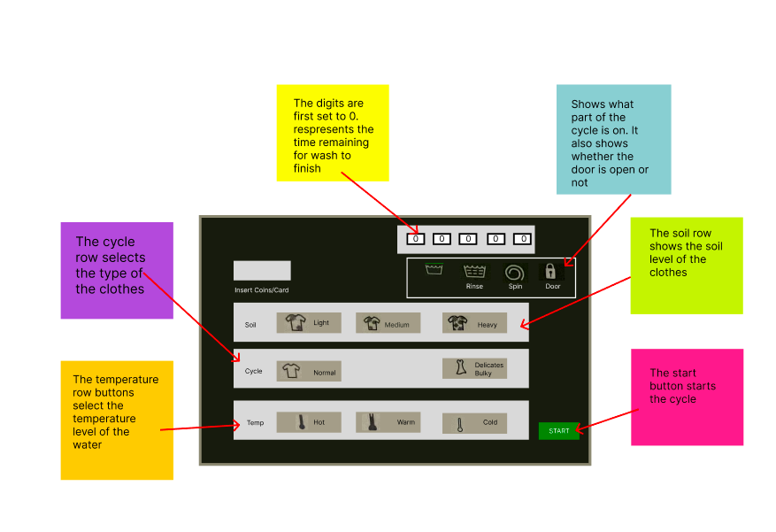

Personas & Storyboarding
Overview
For the personas and storyboarding project, our task is to observe real
users interacting with an interface, interview these individuals about their experiences, create personas
based
on these users, and illustrate a storyboard for one of our personas.
Part 1: Preparation
Description about the interface
sketch of the interface

Part 2:Recording Observations
Observation Summary:
user1:
user2
user3
Questions
- How often do you use this interface?
- What time of the day do you usually do laundry?
- What feature do you like the most?
- What cycle do you usually use?
- Do you use the same cycle each time?
- How do you feel about the control panel settings?
- What, if anything, would you change about the washing machine?
- What challenges did you face, if any, while using the interface?
- How do you know when your wash is done?
- What do you do while you wait for your laundry to finish?
- Anything else, you would like to share about your experience with the washing machine?
Part 3: Personas
Part 4: Storyboards